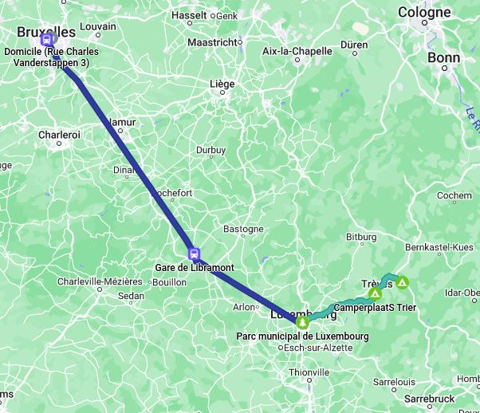

En vélo avec Lise et Nadia le long de la Moselle, du Rhin et en Alsace
Après le marathon de Berlin en 2021, nous nous étions juré que c'était le premier et le dernier: une super expérience mais vraiment trop pénible.
Mais après quelques mois, l'envie de recommencer est revenue. Plus que le marathon,
c'est la perspective de nous entrainer régulièrement ensemble qui nous tentait. Et puis l'entraînement pour Berlin avait été fort
perturbé ce qui laissait un goût de trop peu sur le résultat obtenu.
Le cahier des charges de ce nouveau marathon était simple:
un marathon en juin (pour éviter un entrainement pendant nos vacances en vélo), facile (plat), dans un lieu touristique pour y passer une semaine et pas trop loin de chez nous.
Le choix se porte rapidement surle marathon de la liberté à Caen qui a lieu le 5 juin (le dimanche le plus proche du
débarquement).
C'est l'occasion pour nous de visiter la Normandie et en particulier les plages du débarquement et le musée de Caen
dédié au débarquement et à la deuxième guerre mondiale (le musée de la première guerre mondiale à Verdun avait été une
très bonne surprise).
Après quelques hésitations, nous décidons de loger à proximité de Caen et de visiter la région à partir de cet endroit.
Plutôt un bon choix
car notre AirbnB est très agréable et il y a beaucoup de choses à voir dans le coin. Un petit regret tout de même: nous
renonçons à visiter le Cotentin qui est vraiment trop éloigné de Caen. Ce sera pour une autre fois (ou pas).
Le temps est assez mitigé pendant les jours qui précèdent le marathon et les prévisions sont assez apocalyptiques pour le jour du marathon:
temps très froid et surtout pluie abondante. Et puis miracle le jour J. La météo est parfaite frais mais pas froid, pas de soleil et un vent dans le temps les 15 premiers kilomètres.
Nous parcourons le trajet beaucoup plus rapidement que prévu: 4h39 ! Cette fois-ci nous ne jurons plus de rien: on refera peut-être un marathon...
La météo le lendemain est à nouveau plus clémente que prévue: nous terminons agréablement nos vacances en visitant Deauville, Honfleur et Le Havre.
Les Tops
Le trajet: un bon combiné de voies cyclables et d'improvisation, de trajets plats et de montées, un tour varié à travers la Moselle, le Rhin, la campagne allemande et l’Alsace
La visite surprise de Fénétrange
Les baignades dans la Moselle et autres rivières et les piscines
Le col entre Saint-Marie-aux-Mines et Ribeauvillé
Le 14 juillet et son bal
La météo (14 jours de camping consécutifs)
L'accès facile à l’électricité dans les campings
Et les Flops...
Les montées impossible entre Bad Münster et Wolfstein
Bruxelles - Luxembourg en train + Luxembourg - Riol (camping Trioloago) En vélo) (70 km)
Départ en train de la Gare du Nord. Nous trouvons pour une fois les ascenseurs et ils fonctionnent. Trajet sans problèmes même si comme d’habitude il n’y a pas assez de place pour les vélos.
Arrivée à Luxembourg vers 13:00. On s’arrête pour pique-niquer dans un des parcs de la ville avant de commencer véritablement notre périple à vélo.
Nous avons choisi un peu au hasard un camping le long de la Moselle et nous suivons un trajet sur Komoot (qui nous guidera pendant pratiquement tout le reste du voyage).
La première partie du trajet est très belle, toujours sur des pistes cyclables. L’objectif est de rejoindre la Moselle à peu près à hauteur de la frontière avec l’Allemagne.
La ville de Luxembourg se situe sur un haut plateau et une belle descente vers la vallée de la Moselle nous attend, mais avant cela il faut traverser une longue étendue vallonnée avec quelques montées. Le poids du chargement se fait sentir, surtout pour Nadia et Lise qui n'ont pas l'habitude d’être aussi chargées.
Dans la vallée de la Moselle, le vent souffle dans le dos et nous progressons rapidement. Nous décidons de rejoindre le camping le plus éloigné dans l’espoir qu’il soit plus agréable que ceux que nous croisons et qui ressemblent surtout à des parkings de camping-cars. Nous essayons sans succès de téléphoner au camping pour réserver une place (après une longue discussion sur la stratégie à suivre: réserver ou arriver la mine hagarde au bord de l’épuisement pour ne pas laisser d’autre choix que de nous trouver une place) mais nous tombons sur un répondeur avec un long message dont nous ne comprenons que le premier mot: « leider ». Malheureusement. Malheureusement quoi, il faudra y aller pour le savoir…
Nous arrivons finalement, après 18:30. Le camping est plein de camping-cars (pas une tente à l’horizon) mais le coup de la mine épuisée fonctionne et on nous trouve une petite place à côté des toilettes. On s’en contentera, pour la première nuit et on est bien contents d’avoir trouvé quelque chose. Repas au restaurant italien à côté du camping (qui ne laisse augurer rien de bon de la gastronomie allemande, heureusement la suite sera meilleure) suivi d’un tour du camping, assez déprimant, camping-cars et maisonnettes de location, peu de place et de nature autour. Heureusement il y a la propreté étincelante des sanitaires pour se consoler (enfin certaines plus que d’autres).
J'annonce à plusieurs reprises que nous avons gravi la dernière montée et apparemment ce n'est pas drôle...

Samedi 2 juillet (jour 2)
Riol (camping Trioloago) - Erden (52 km)
La nuit a été fraîche et Lise et Nadia ont eu froid. Nous, on eu trop chaud… On commence en suivant la Moselle et puis on s’aventure à l’intérieur des terres pour chercher un magasin pour acheter un pique-nique.
Ça monte un peu (mais raisonnablement) et cela nous permet de voir de cholis villages et des vignobles. Pas beaucoup de commerces mais on trouve une petite épicerie. Pique-nique au bord de l’eau. Il fait très chaud. Arrêt à Bernkastel-Kues pour boire quelque chose de frais. Nadine commande un café glacé et reçoit un café avec de la glace. Elle décrète qu’elle va prendre 10 kg mais ne daigne pas nous laisser goûter… Rencontre avec des hollandais et débat sur les meilleurs cheesecakes. Nous dégustons un Apfelschorle délicieusement frais. D’après le routard, la ville est très mignonne mais nous avons trop chaud pour la visiter. Nous ne sommes même plus capables de retirer de l’argent au distributeur…
Encore 10 km pour arriver au camping. Il est à nouveau bien rempli mais il a une grande prairie pour accueillir les tentes. Il y a très peu de cyclistes et effectivement on n’en a pas rencontré beaucoup le long de la Moselle. Le manque de cash commence à se faire sentir, on ne peut payer absolument nulle part avec une carte bancaire… Il faut jongler avec les derniers euros qui nous restent. Premier apéro des vacances dans le bar du camping avec de la bière bien fraîche et repas au restaurant du camping. Nous entamons notre cycle de découverte gastronomique du wiener schnitzel (pas top mais plus comestible que la pizza à la mode germanique).
Dimanche 3 juillet (jour 3)
Erden - Cochet (62 km)
La nuit a été bonne mais toujours bien fraîche pour Lise et Nadia. On se rend compte qu’on est dimanche et on n’a plus rien à manger. Sur Google tout est indiqué comme fermé mis à part l’unique magasin de la vallée qui se trouve dans la ville où nous pensons loger ce soir. Un allemand m’avait expliqué qu'en Allemagne, absolument tous les magasins sont fermés le dimanche, sauf ceux tenus par des maghrébins et des pakistanais. Et visiblement des syriens, car le magasin s’appelle le « Syriana ». On cherche tout de même des magasins ouverts sur notre trajet mais il faut se rendre à l’évidence: « pas de maghrébin, pas de magasin » !
On décide finalement de manger au restaurant le midi car le Syriana est encore bien loin mais sans beaucoup de succès: soit il n’y a pas de place (on est dimanche), soit il n’y a pas d’ombre (il fait toujours très chaud) soit on n’a pas assez de cash. On finit par tomber par hasard sur un marché aux puces avec une camionnette. Pas de hamburgers sophistiqués ou de salades quinoa-graines de chia mais des frites et du curry wurst. On a tout juste de quoi payer. La dimension gastronomique de notre périple touche à nouveau le fond mais on a tellement faim que c’en est presque bon !
Nous poursuivons notre trajet le long de la Moselle. Pas très facile de savoir si on est du bon côté (l’autre a l’air toujours mieux) et il y a quelques tronçons le long de la route (mais toujours en piste cyclable sécurisée). On s’arrête pour faire une petite baignade dans la Moselle, agréablement rafraîchissante mais un peu piquante au niveau des pieds.
Arrivé à Cochem, on peine à trouver de l’argent mais on finit par y arriver. Le camping est assez moyen avec de petits emplacements pour les tentes. Une tendance se dégage: les campings allemands aiment les camping-cars et les sanitaires luxueux. On est bien crevés par le vélo sous le soleil et on décide de ne pas repartir visiter Cochem et de déguster un délicieux spaghetti au camping précédé bien entendu par un apéro avec de la bière bien fraîche !
Lundi 4 juillet (jour 4)
Erden - Sankt-Goar (60 km ?)
Nous décidons de prendre un raccourci et de ne pas aller jusqu’à Coblence pour rejoindre le Rhin. Nous commençons à longer la Moselle en essayant de prendre un raccourci en coupant un de ses méandres particulièrement tortueux. Google Maps prend le relais de Komoot et nous propose de tourner à gauche à hauteur d’un tunnel de chemin de fer. Petit problème: il n’y a pas de chemin. Enfin après vérification il y a un sentier bien raide que l’on pourrait tenter de gravir en poussant nos vélos après bien entendu avoir enlevé nos sacoches… Ce ne sera que le début de quelques coups fourrés que Google va nous préparer (le message d’avertissement de Google sur le caractère encore expérimental des recommandations pour le vélo prend ici tout son sens). On décide donc de reprendre Komoot et de ne pas couper le méandre.
A hauteur de Brodenbach, dernier arrêt le long de la Moselle. Nous cherchons vainement un café ouvert mais c’est lundi et absolument tout est fermé, sauf une petite supérette où nous achetons quelques boissons fraîches et du café dilué. Un itinéraire vélo, différent de celui recommandé par Komoot, est indiqué pour se rendre à Boppard, notre point d’arrivée sur le Rhin. Nous décidons de le suivre, à notre plus grande satisfaction car nous évitons les raides montées proposées par Komoot et nous grimpons gentiment dans le fond de la vallée. On traverse de beaux paysages qui nous changent de la Moselle. La route asphaltée se termine soudainement au milieu d’un terrain occupé par une communauté de hippies qui détonne avec les villages tout propret que nous avons traversés depuis que nous sommes en Allemagne. La douce route asphaltée se transforme en une montée bien raide dans la forêt sur un chemin caillouteux que nous grimpons vaille que vaille en essayant de ne pas mettre pied à terre. Pas très facile de trouver son chemin mais nous arrivons finalement sur une crête bien dégagée où nous pique-niquons. Ensuite descente vers le Rhin et la ville de Boppard. Là il faut décider: soit remonter le Rhin de quelques kilomètres pour trouver le camping le plus proche, soit continuer en direction de Sankt Goar où se trouve un camping chaudement recommandé par le Routard (il y en a un deuxième « recommandé » par le Routard: « ne s’y arrêter qu’en cas de panne d'essence »).
Nous décidons d’aller à Sankt-Goar, ce qui nous permet d’admirer le Rhin. La vallée est beaucoup plus large que la Moselle mais la piste cyclable est moins agréable car elle longe en permanence la route et la voie de chemin de fer.
Arrivés à Sankt-Goar, Nadia et Lise vont faire quelques courses pendant que nous allons réserver un emplacement au camping, agréablement situé au calme en retrait de la route. Il n’y a pas de camping-cars et les cyclistes (il y en a plus que le long de la Moselle) sont regroupés sur une petite pelouse. Le soir, nous mangeons au restaurant du camping, ce qui nous permet d’approfondir notre connaissance de la gastronomie allemande, l’incontournable wiener schnitzel (qui est d’ailleurs autrichien). Après le repas, Nadia et Lise vont se promener sur la route où elles font connaissance avec un sanglier.
Nous décidons de quitter le Rhin qui est trop rectiligne et trop proche de la route. Une discussion ouverte sur les différentes options commencent...